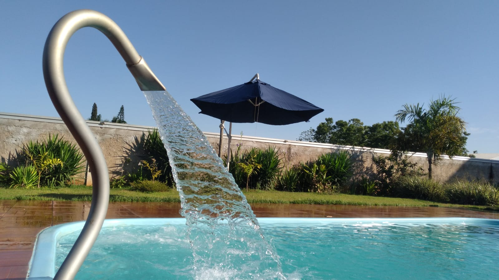
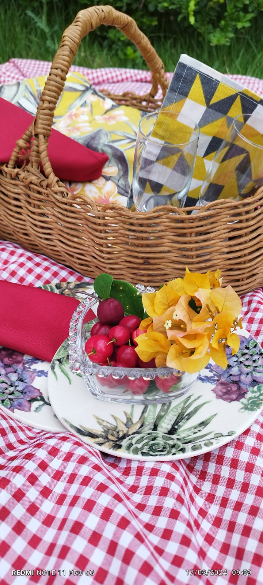
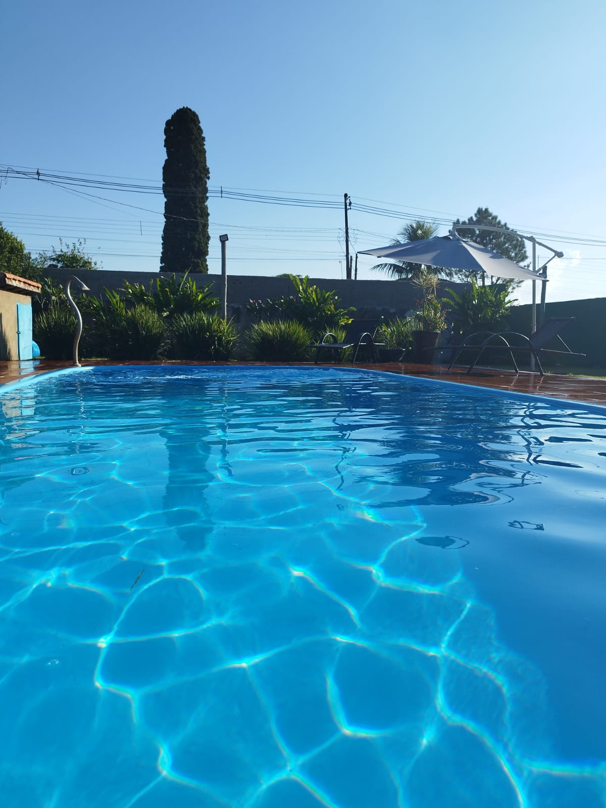
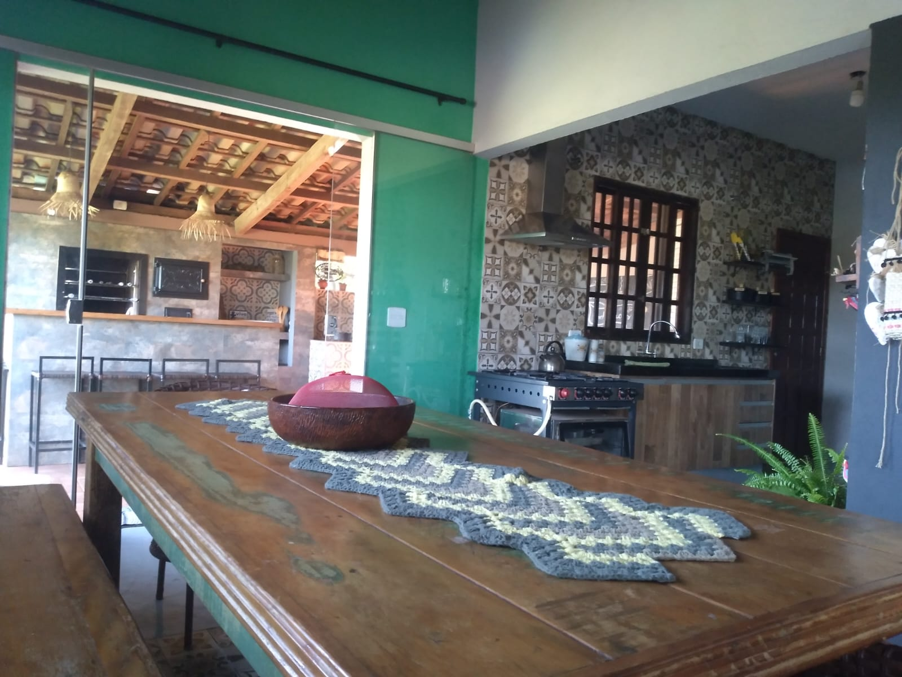

Quintal De Casa


Conforto
Além de todos esses benefícios sempre iremos priorizar o conforto e o bem estar geral por meio de suportes que nós iremos oferecer para vocês, temos redes de descanso para relaxar depois de um longo churrasco, cinco camas sendo duas de casais para poder dormir sem ter que levar nada, fogão a lenha no espaço exterior, churraqueira, além de duas mesas de madeiras e diversas outras de plástico para acomodar quantos convidados forem precisos!
Esportes
Dedicamos uma parcela de nosso espaço para a realização de esportes, temos dois golzinhos assim como um suporte para rede de vôlei, ambos esses esportes podem ser praticado por diversas pessoas devido ao espaço que oferecemos.

